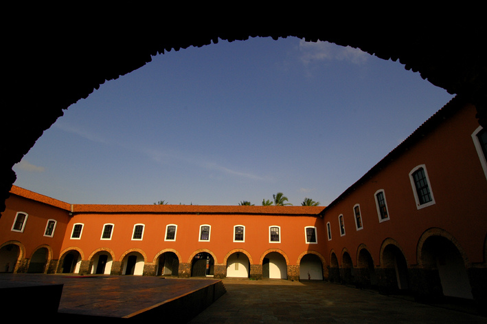
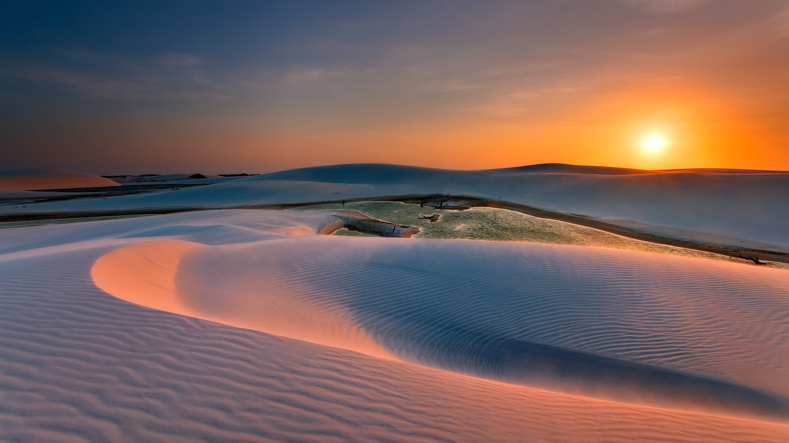

Considerada um dos monumentos históricos mais antigos e importantes de São Luís do Maranhão, a Igreja da Sé (ou Catedral Metropolitana) foi denominada Igreja de Nossa Senhora da Vitória, em homenagem a Nossa Senhora, protetora dos portugueses na Batalha de Guaxenduba. A catedral reflete a influência do estilo arquitetônico barroco, com suas imponentes fachadas e detalhes ornamentados. Ela foi erguida pelos colonizadores portugueses, que buscavam afirmar sua presença e poder na região.
A Catedral Metropolitana é um importante centro religioso, atraindo fiéis e turistas interessados em sua arquitetura magnífica e sua história rica. É um local de devoção, mas também nos conecta ao passado e ajuda a compreender a evolução do Maranhão ao longo dos séculos.

Convento das Mercês
Considerado um dos monumentos históricos mais importantes do Maranhão, o Convento das Mercês desempenhou um papel significativo na história do estado, tanto do ponto de vista religioso quanto social e arquitetônico. Foi um centro de disseminação da fé católica e um importante espaço de encontro e convivência entre religiosos e a sociedade da época.
O Convento das Mercês possui uma arquitetura imponente e características que refletem o estilo barroco. Suas estruturas, como o claustro e a igreja, apresentam detalhes elaborados e artísticos, revelando a riqueza e a habilidade dos artistas e artesãos da época. Além de sua importância arquitetônica, o convento é um testemunho vivo da história maranhense e um local que nos permite compreender a influência da fé e da cultura na formação do estado.

Lençóis Maranhenses
Os lençóis maranhenses, um dos principais pontos turísticos do estado do Maranhão, no Brasil, faz parte do
Parque Nacional dos Lençóis que tem uma área de 156,5 mil hectares. A paisagem é composta principalmente por
dunas de areia branca, que lembram lençóis jogados na cama, formadas pela força dos ventos que constantemente
mudam de posição alterando a aparência da região.
O Parque Nacional dos Lençóis Maranhenses é um verdadeiro paraíso natural, com suas lagoas de água cristalina que se formam durante a temporada de chuvas. Além da beleza natural, os Lençóis Maranhenses são um importante ecossistema, abrigando diversas espécies de fauna e flora. A preservação desse local é fundamental para garantir a sustentabilidade e a continuidade desse ambiente único.
Palácio dos Leões
O Palácio dos Leões é um dos principais símbolos históricos e políticos do Maranhão. Localizado em São Luís, é a sede oficial do governo estadual. O palácio foi construído no século XVII e possui uma arquitetura imponente que mescla influências renascentistas e barrocas.
Além de sua beleza arquitetônica, o Palácio dos Leões desempenhou um papel crucial na história do Maranhão. Foi residência dos governadores coloniais portugueses, testemunhou importantes momentos políticos e transformações sociais ao longo dos séculos. Atualmente, o Palácio dos Leões abriga o gabinete do governador e é aberto ao público para visitação, oferecendo aos visitantes a oportunidade de conhecer as salas históricas, os jardins e apreciar a rica decoração interior, que inclui obras de arte e móveis antigos.
Onde a História e a Natureza se Encontram - Descobrindo a Magia
Os monumentos e pontos culturais desempenham um papel crucial na preservação e promoção da identidade cultural de
uma região. Eles representam marcos históricos e arquitetônicos que contam a história de um povo e oferecem uma
visão única do passado. No estado do Maranhão, no Brasil, destacam-se quatro importantes pontos culturais:
a Catedral Metropolitana, o Convento das Mercês, os Lençóis Maranhenses e o Palácio dos Leões.
A Catedral Metropolitana, localizada em São Luís, é um exemplo notável da arquitetura religiosa no Brasil. Sua
grandiosidade e beleza arquitetônica atraem visitantes de todo o país. Além de ser um local de culto, a catedral é
uma referência histórica e cultural para os moradores locais, conectando as gerações passadas e presentes.
Outro ponto de destaque é o Convento das Mercês, também situado em São Luís. Esse convento, datado do século
XVII, possui uma importância histórica e religiosa significativa. Suas paredes de pedra contam histórias de fé e
devoção, enquanto seus corredores preservam a memória de tempos passados. O Convento das Mercês é um local que
convida os visitantes a explorar o patrimônio cultural e religioso do Maranhão.
Os Lençóis Maranhenses, localizados no nordeste do estado, são uma das maravilhas naturais do Brasil. Esse
deslumbrante cenário de dunas de areia e lagoas azuis cria uma paisagem única e impressionante. Os Lençóis
Maranhenses têm um papel crucial na preservação da biodiversidade, além de serem uma atração turística de renome.
A região é valorizada como um ecossistema frágil e precioso, e sua preservação é essencial para garantir a
sustentabilidade e o encanto desse destino.
Por fim, o Palácio dos Leões, também localizado em São Luís, é um ícone da história política do Maranhão. Sua
arquitetura imponente e rica simboliza o poder e a importância do estado. O palácio serviu como residência oficial
de governadores ao longo dos anos e testemunhou momentos históricos. Hoje, abriga um museu que oferece aos
visitantes uma visão abrangente da história e cultura maranhenses.
Esses monumentos e pontos culturais têm um valor inestimável para a identidade e o turismo do Maranhão. Eles
preservam a história, promovem o conhecimento e encantam os visitantes, destacando a riqueza cultural e natural do
estado. É essencial valorizar e proteger esses locais para que as gerações futuras possam desfrutar e aprender com
a herança cultural que eles representam.